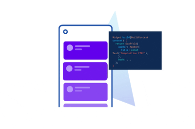

PyTorch at the Edge: Deploying Over 964 TIMM Models on Android with TorchScript and Flutter


Table of Contents
🔥 Motivation
With various high-level libraries like Keras, Transformer, and Fastai, the barrier to training SOTA models has never been lower.
On top of that with platforms like Google Colab and Kaggle, pretty much anyone can train a reasonably good model using an old laptop or even a mobile phone (with some patience).
The question is no longer “can we train a SOTA model?”, but “what happens after that?”
Unfortunately, after getting the model trained, most people wash their hands off at this point claiming their model works. But, what good would SOTA models do if it’s just in notebooks and Kaggle leaderboards?
Unless the model is deployed and put to use, it’s of little benefit to anyone out there.

But deployment is painful. Running a model on a mobile phone?
Forget it 🤷♂️.
The frustration is real. I remember spending nights exporting models into ONNX and it still failed me.
Deploying models on mobile for edge inference used to be complex.
Not anymore.
In this post, I’m going to show you how you can pick from over 900+ SOTA models on TIMM, train them using best practices with Fastai, and deploy them on Android using Flutter.
✅ Yes, for free.
tip
⚡ By the end of this post you will learn how to:
- Load a SOTA classification model from TIMM and train it with Fastai.
- Export the trained model with TorchScript for inference.
- Create a functional Android app and run the inference on your device.
🔥 The inference time is at 100ms and below on my Pixel 3 XL! The lowest I got was 37ms!
💡 NOTE: Code and data for this post are available on my GitHub repo here.
Here’s a TLDR 👇
If that looks interesting, read on 👇
🌿 Dataset
We will be working with the Paddy Disease Classification dataset from Kaggle.
The dataset consists of 10,407 labeled images across ten classes (9 diseases and 1 normal):
bacterial_leaf_blightbacterial_leaf_streakbacterial_panicle_blightblastbrown_spotdead_heartdowny_mildewhispatungronormal
The task is to classify the paddy images into 1 of the 9 diseases or normal.
Few sample images shown below.

Next, I download the data locally and organize them in a folder structure. Here’s the structure I have on my computer.
├── data
│ ├── test_images
│ └── train_images
│ ├── bacterial_leaf_blight
│ ├── bacterial_leaf_streak
│ ├── bacterial_panicle_blight
│ ├── blast
│ ├── brown_spot
│ ├── dead_heart
│ ├── downy_mildew
│ ├── hispa
│ ├── models
│ ├── normal
│ └── tungro
└── train
└── train.ipynb
note
Descriptions of the folders:
data/- A folder to store train and test images.train/- A folder to store training-related files and notebooks.
View the full structure by browsing my GitHub repo.
tip
🔔 If you’d like to explore the dataset and excel in the competition, I’d encourage you to check out a series of Kaggle notebooks by Jeremy Howard.
- First Steps. - Setting up, looking at the data and training your first model.
- Small Models. - Iterate faster with small models, test time augmentation, and then scale up.
- Scaling Up. - Testing various models, Vision Transformers, and Ensembles.
- Multi-target. - Train a multi-target model with Fastai.
I’ve personally learned a lot from the notebooks. Part of the codes in the post is adapted from the notebooks.
Now that we’ve got the data, let’s see how to start building a model out of it
For that we need 👇
🥇 PyTorch Image Models
There are many libraries to model computer vision tasks but PyTorch Image Models or TIMM by Ross Wightman is arguably the most prominent one today.
The TIMM repository hosts hundreds of recent SOTA models maintained by Ross. At this point (January 2023) we have 964 pre-trained models on TIMM and increasing as we speak.
You can install TIMM by simply:
pip install timm
One line of code, and we’d have access to all models on TIMM!
With such a massive collection, it can be disorienting which model to start from. Worry not, TIMM provides a function to search for model architectures with a wildcard.
Since we will be running the model on a mobile device, let’s search for model names that contain the word edge:
import timm
timm.list_models('*edge*')
This outputs all models that match the wildcard.
['cs3edgenet_x',
'cs3se_edgenet_x',
'edgenext_base',
'edgenext_small',
'edgenext_small_rw',
'edgenext_x_small',
'edgenext_xx_small']
Looks like we have something related to the EdgeNeXt model.
With a simple search and reading through the preprint EdgeNeXt - Efficiently Amalgamated CNN-Transformer Architecture for Mobile Vision Applications, looks like it’s a fitting model for our application!
With the model name, you can now start training. The TIMM repo provides various utility functions and training scripts. Feel free to use them.
In this post, I’m going to show you an easy way to train a TIMM model using Fastai 👇
🏋️♀️ Training with Fastai
Fastai is a deep learning library that provides practitioners with high high-level components that can quickly provide SOTA results. Under the hood Fastai uses PyTorch but it abstracts away the details and incorporates various best practices in training a model.
Install Fastai with:
pip install fastai
Since, we’d run our model on a mobile device, let’s select the smallest model we got from the previous section - edgenext_xx_small.
Let’s import all the necessary packages with:
from fastai.vision.all import *
Next, load the images into a DataLoader.
trn_path = Path('../data/train_images')
dls = ImageDataLoaders.from_folder(trn_path, seed=316,
valid_pct=0.2, bs=128,
item_tfms=[Resize((224, 224))],
batch_tfms=aug_transforms(min_scale=0.75))
note
Parameters for the from_folder method:
trn_path– APathto the training images.valid_pct– The percentage of dataset to allocate as the validation set.bs– Batch size to use during training.item_tfms– Transformation applied to each item.batch_tfms– Random transformations applied to each batch to augment the dataset. Read more here.
📝 NOTE: Check out the Fastai docs for more information on the parameters.
You can show a batch of the train images loaded into the DataLoader with:
dls.train.show_batch(max_n=8, nrows=2)

Next create a Learner object which stores the model, dataloaders, and loss function to train a model.
Read more about the Learner here.
For vision classification tasks we can create a Learner by calling the vision_learner function and providing the necessary parameters:
learn = vision_learner(dls, 'edgenext_xx_small', metrics=accuracy).to_fp16()
note
Parameters for vision_learner:
- dls - The
Dataloaderobject. - edgenext_xx_small - Model name from TIMM.
📝 NOTE: Read more on vision_learner here.
In Fastai, you can easily incorporate Mixed Precision Training by adding the .to_fp16() method. This little trick reduces memory usage and trains your model faster at the cost of precision.
One of my favorite features in Fastai is the learning rate finder. It lets you estimate the range of learning rate to train the model for the best results.
Find the best learning rate with:
learn.lr_find()

tip
The orange dot 🟠 shows the suggested learning rate which is approximately at 2e-3.
A good learning rate lies at the point where the loss is decreasing most rapidly. On the plot, it’s anywhere
from the orange dot 🟠 to the point where the loss starts increasing again approximately at 1e-1. I’ll pick 1e-2 as my learning rate.
Read a post by Zach Mueller on how to pick a good learning rate.
Now train the model for 5 epochs and a base learning rate of 0.002 with the 1cycle policy.
The ShowGraphCallback callback plots the progress of the training.
learn.fine_tune(5, base_lr=1e-2, cbs=[ShowGraphCallback()])

With just a few lines of code, we can train a reasonably good model with Fastai. For completeness, here are the few lines of codes you need to load and train the model:
|
|
tip
For demonstration purposes, I’ve only with only 5 epochs. You can train for longer to obtain better accuracy and model performance.
📝 NOTE: View my training notebook here.
You can optionally export the Learner object and import it from another script or notebook with:
learn.export("../../train/export.pkl")
Once done, now it’s time we transform the model into a form we can use for mobile inference.
For that, we’ll need 👇
📀 Exporting with TorchScript
In this section, we export the model into a form suitable for a mobile device. We can do that easily with TorchScript.
TorchScript is a way to create serializable and optimizable models from PyTorch code on a variety of platforms, including desktop and mobile devices, without requiring a Python runtime.
With TorchScript, the model’s code is converted into a static graph that can be optimized for faster performance, and then saved and loaded as a serialized representation of the model.
This allows for deployment to a variety of platforms and acceleration with hardware such as GPUs, TPUs, and mobile devices.
All the models on TIMM can be exported with TorchScript using the following code snippet.
|
|
note
From the snippet above we need to specify a few things:
Line 6: The shape of the input image tensor.Line 9: “torchscript_edgenext_xx_small.pt” is the name of the resulting TorchScript serialized model.
If you already have your own model.pt file, replace Line 4 and Line 5 with:
model = torch.load('model.pt', map_location="cpu")
model.eval()
📝 NOTE: View the full notebook from training to exporting the model on my GitHub repo here.
Once completed, you’ll have a file torchscript_edgenext_xx_small.pt that can be ported to other devices for inference.
In this post, I will be porting it to Android using a framework known as Flutter.
📲 Inference in Flutter

Flutter is an open-source framework by Google for building beautiful, natively compiled, multi-platform applications from a single codebase.
We can load the torchscript_edgenext_xx_small.pt and use if for inference.
To do so, we will use the pytorch_lite Flutter package.
The pytorch_lite package supports image classification and detection with TorchScript.
The following code snippet shows a function to load our serialized model torchscript_edgenext_xx_small.pt.
|
|
note
From the snippet above we need to specify a few things:
Line 2: Path to the serialized model.Line 5: The input image size -224by224pixels.Line 6: A text file with labels associated with each class.
View the full code on my GitHub repo.
The following code snippet shows a function to run the inference.
|
|
Those are the two important functions to load and run the TorchScript model.
The following screen capture shows the Flutter app in action. The clip runs in real-time and is NOT sped up!
The compiled .apk file is about 77MB in size and the inference time is at 100 ms or below on my Pixel 3 XL!
Try it out and install the pre-built .apk file on your Android phone here.
🙏 Comments & Feedback
That’s a wrap! In this post, I’ve shown you how you can start from a model, train it, and deploy it on a mobile device for edge inference.
tip
⚡ In short we learned how to:
- Load a SOTA classification model from TIMM and train it with Fastai.
- Export the trained model with TorchScript for inference.
- Create a functional Android app and run the model inference on your device.
📝 NOTE: View the codes for the entire post on my GitHub repo here.
What’s next? If you’d like to learn about how I deploy a cloud based object detection model on Android, check it out here.
I hope you’ve learned a thing or two from this blog post. If you have any questions, comments, or feedback, please leave them on the following Twitter/LinkedIn post or drop me a message. Alternatively you can also comment on this Hacker News thread.
Tired of training models that never see the light of day? Don't let your hard work go to waste!
— Dickson Neoh 🚀 (@dicksonneoh7) February 14, 2023
In this 🧵, I'll show you how to pick from over 900+ models from TIMM by @wightmanr , train them with Fastai by @jeremyphoward , and deploy them on Android – all for free. pic.twitter.com/25pgunaJNM
- GitHub
- Telegram
🤟 Follow me
Don't want to miss any of my future content? Follow me on Twitter and LinkedIn where I share these tips in bite-size posts.
🔄 Share this post
❤️ Show some love
Creating free ML contents doesn't pay my bills. Support me in creating more free contents like these. Consider buying me a coffee. Your support means a lot to me.